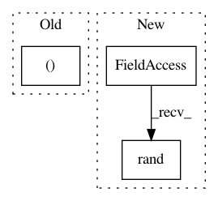

1d2ad790dd43a2d702176c1170b2f3fd592a385a,tests/keras/layers/wrappers_test.py,,test_Bidirectional_state_reuse,#,321
Before Change
inputs = Input((timesteps, dim))
layer = wrappers.Bidirectional(rnn(units, return_state=True, return_sequences=True))
outputs = layer(inputs)
output, state = outputs[0], outputs[1:]
// test passing invalid initial_state: passing a tensor
with pytest.raises(ValueError):
After Change
assert len(model.layers) == 4
assert isinstance(model.layers[-1].input, list)
inputs = [np.random.rand(samples, timesteps, dim),
np.random.rand(samples, timesteps, dim)]
outputs = model.predict(inputs)
In pattern: SUPERPATTERN
Frequency: 3
Non-data size: 3
Instances
Project Name: keras-team/keras
Commit Name: 1d2ad790dd43a2d702176c1170b2f3fd592a385a
Time: 2018-01-30
Author: myutwo150@users.noreply.github.com
File Name: tests/keras/layers/wrappers_test.py
Class Name:
Method Name: test_Bidirectional_state_reuse
Project Name: keras-team/autokeras
Commit Name: 736ba6c6873290fdae110395040f76ba7ab0ff19
Time: 2017-12-17
Author: wangtaoo665@gmail.com
File Name: tests/test_net_transformer.py
Class Name:
Method Name: test_net_transformer
Project Name: keras-team/keras
Commit Name: 9d15c9611570bd3ecab52ed924c69a60ac3b2784
Time: 2016-01-03
Author: julien@fhtagn.net
File Name: tests/keras/layers/test_convolutional.py
Class Name:
Method Name: test_upsampling_2d